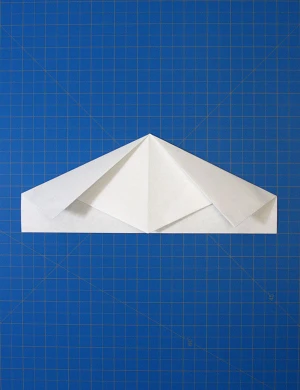
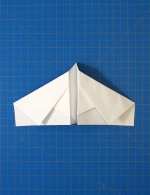

1Step 1
Crease the sheet both ways into four equal rectangles, then open it.
Crease the sheet both ways into four equal rectangles, then open it.

Bring the top corners down to the centre horizontal crease.

Bring the tip down until it meets the bottom edge.

Fold each top corner down to the bottom of its side.

Bring the halves together toward yourself.

Fold each side out into a wing — the body ends up about 2 cm (3/4 inch) tall.

Finally, bend the wing tips up about 1.3cm (1/2 inch) as shown in the guide.
With a calm day and a level throw, expect only a short distance, since this design is not built for range. Wind, paper weight, and small crease errors all change the result.
A well-trimmed Star Display Fold should hold a very brief flight; the design is not aimed at hang time. Launching from a higher spot and keeping the wings level will extend it.
It is best for tricks and loops. Folding skill is intermediate. Use Letter & A4, 7 steps, hands only.
Use a quick wrist snap and a fairly firm throw so the plane has enough speed to complete its maneuver.